| Income quintile | No. of countries | Range of GNI per capita (PPP) in quintile | Countires in quintile |
|---|---|---|---|
| 1 | 11 | 8,710 - 14,290 | Bolivia (Plurinational State of), Ecuador, Egypt, Guatemala, Iraq, Republic of Moldova, Peru, Paraguay, Tunisia, Ukraine, South Africa |
| 2 | 10 | 14,470 - 21,260 | Azerbaijan, Bosnia and Herzegovina, Brazil, Colombia, Costa Rica, Dominican Republic, Georgia, Iran (Islamic Republic of), Mexico, Serbia |
| 3 | 10 | 22,100 - 32,740 | Argentina, Bulgaria, Chile, Greece, Croatia, Kazakhstan, Panama, Romania, Russian Federation, Slovakia |
| 4 | 10 | 33,510 - 49,140 | Canada, Czechia, Spain, Hungary, Israel, Italy, Japan, Poland, Portugal, Slovenia |
| 5 | 10 | 49,370 - 71,070 | Austria, Belgium, Switzerland, Germany, France, The United Kingdom, Ireland, Netherlands, Sweden, USA |
Age-sex patterns of COVID mortality across countries
Introduction
This paper seeks to understand how mortality risks from COVID for men and women differ by age, and how gender differences in mortality risk from COVID compare to gender differences in mortality risks from all-causes.
Data
This analyses in this paper use global excess deaths associated with COVID-19 (modeled estimates) produced by the Technical Advisory Group (TAG) on COVID-19 mortality assessment. Estimates of expected all-cause deaths (baseline), actual cause deaths and excess deaths are provided by country and 7 age groups:“0-24” , “25-34” , 35-44”, “45-54”, “55-64”, “65-74”, “75-84”, “>85”.
Out of 195 countries in the WHO database, 75 countries have excess death estimates based on reported all-cause death records disaggregated by gender for 2020 and of these, 61 also use reported deaths by gender and age for 2021.
Inclusion criteria for this analysis are as follows:
- Age groups at or above 45 years of age
- Countries with a total population of at least 1m
- Countries with a cumulative official COVID-19 death toll of at least 2000 deaths at the end of 2020
- Countries with reported all-cause data disaggregated by age and sex in 2020
- The following 51 countries are included in this analysis: Argentina, Austria, Azerbaijan, Belgium, Bulgaria, Bosnia and Herzegovina, Bolivia (Plurinational State of), Brazil, Canada, Switzerland, Chile, Colombia, Costa Rica, Czechia, Germany, Dominican Republic, Ecuador, Egypt, Spain, France, The United Kingdom, Georgia, Greece, Guatemala, Croatia, Hungary, Ireland, Iran (Islamic Republic of), Iraq, Israel, Italy, Japan, Kazakhstan, Republic of Moldova, Mexico, Netherlands, Panama, Peru, Poland, Portugal, Paraguay, Romania, Russian Federation, Serbia, Slovakia, Slovenia, Sweden, Tunisia, Ukraine, USA, South Africa
Results
Sample of countries in analysis data-set by GNI per capita quintiles
Sex-ratio in mortality (all-cause and excess in 2020): Observations
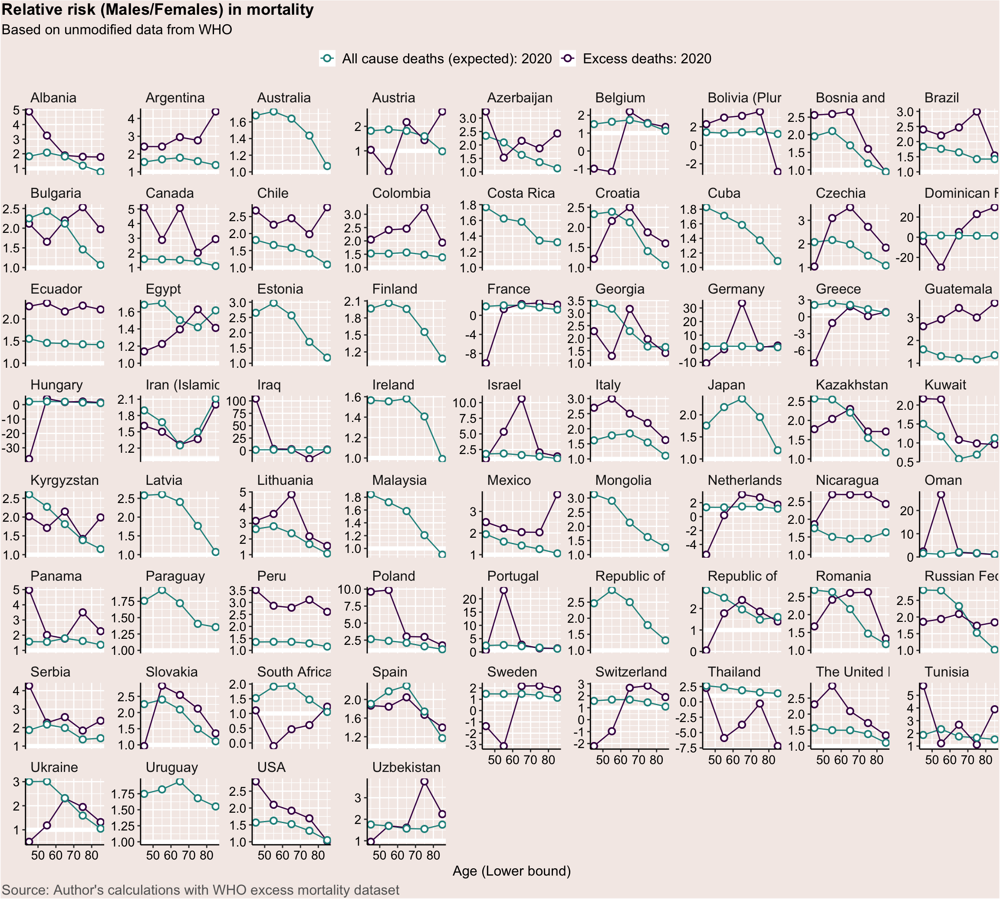
Age-adjusted poisson model (with interaction)
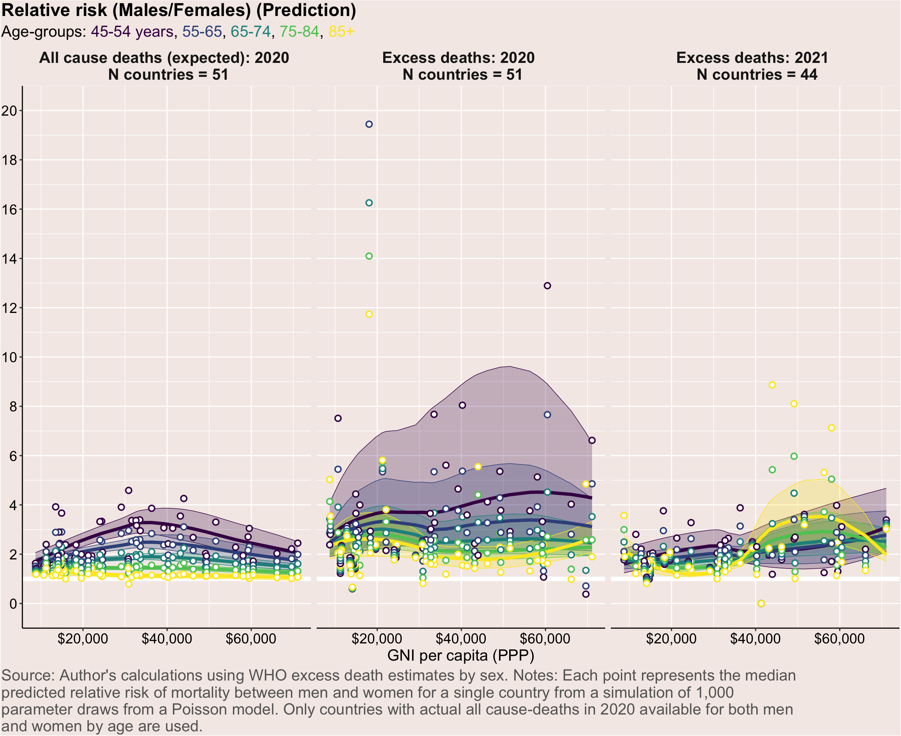
Relationship between predicted sex-differences in mortality and country income
All available data (composition of countries changes in 2021)

Sex ratio of mortality by age, year and country income quintiles
sims_summary <- prep_sims_summary_by_inc_quint(sims, income)Warning: There was 1 warning in `mutate()`.
ℹ In argument: `logp5 = ifelse(...)`.
Caused by warning in `log()`:
! NaNs producedprep_results_table(sims_summary, slct_metric = "Relative risk (Males/Females)", slct_source = c("All cause deaths (expected)", "Excess deaths")) %>%
arrange(group) %>% select(-group) %>%
kbl(caption = "Median and interquartile range of predictions are shown") %>%
kable_classic(full_width = F, html_font = "Cambria") %>%
pack_rows("All cause deaths (expected): 2020", 1, 5) %>%
pack_rows("Excess deaths: 2020", 6, 10) %>%
pack_rows("Excess deaths: 2021", 11, 15) | Age_Lower | Quintile: 1 | Quintile: 2 | Quintile: 3 | Quintile: 4 | Quintile: 5 |
|---|---|---|---|---|---|
| All cause deaths (expected): 2020 | |||||
| 45 | 1.86 (1.5-2.58) | 2.14 (1.75-2.6) | 3.2 (2.34-3.71) | 2.97 (2.39-3.75) | 2.26 (1.79-2.95) |
| 55 | 1.71 (1.42-2.17) | 1.85 (1.61-2.12) | 2.47 (1.98-2.72) | 2.33 (1.98-2.76) | 1.88 (1.59-2.28) |
| 65 | 1.57 (1.34-1.85) | 1.61 (1.47-1.77) | 1.89 (1.7-2.02) | 1.83 (1.63-2.05) | 1.57 (1.4-1.77) |
| 75 | 1.44 (1.25-1.59) | 1.43 (1.28-1.58) | 1.47 (1.37-1.55) | 1.44 (1.33-1.55) | 1.31 (1.21-1.42) |
| 85 | 1.25 (1.13-1.43) | 1.26 (1.08-1.44) | 1.14 (1.05-1.26) | 1.12 (1.03-1.22) | 1.09 (0.99-1.2) |
| Excess deaths: 2020 | |||||
| 45 | 2.1 (1.33-3.02) | 3.05 (1.79-5.6) | 2.37 (1.9-3.58) | 3.91 (2.35-7.06) | 3.61 (1.82-6.34) |
| 55 | 2.11 (1.39-2.95) | 2.66 (1.9-4.14) | 2.31 (1.95-3.03) | 3.22 (2.17-4.95) | 2.9 (1.82-4.43) |
| 65 | 2.06 (1.44-2.97) | 2.32 (1.89-3.21) | 2.23 (1.93-2.75) | 2.66 (1.96-3.54) | 2.35 (1.78-3.2) |
| 75 | 2.01 (1.43-2.9) | 2.11 (1.62-2.91) | 2.05 (1.82-2.52) | 2.1 (1.68-2.65) | 2.08 (1.65-2.57) |
| 85 | 1.98 (1.34-2.93) | 1.94 (1.3-3.05) | 1.86 (1.58-2.39) | 1.62 (1.35-2.13) | 1.74 (1.31-2.26) |
| Excess deaths: 2021 | |||||
| 45 | 1.76 (1.36-2.26) | 1.62 (1.11-2.64) | 2.1 (1.6-2.74) | 2.17 (1.4-2.98) | 2.52 (1.49-4.21) |
| 55 | 1.77 (1.39-2.11) | 1.63 (1.22-2.25) | 1.9 (1.55-2.29) | 2.21 (1.68-2.86) | 2.32 (1.67-3.53) |
| 65 | 1.72 (1.36-1.99) | 1.61 (1.34-2.01) | 1.71 (1.49-1.94) | 2.22 (1.83-2.84) | 2.21 (1.68-3.25) |
| 75 | 1.6 (1.26-1.92) | 1.62 (1.38-1.9) | 1.54 (1.39-1.69) | 2.16 (1.77-2.72) | 2.15 (1.53-3.41) |
| 85 | 1.48 (1.11-1.96) | 1.63 (1.28-1.95) | 1.38 (1.23-1.55) | 2.1 (1.56-2.9) | 2.08 (1.25-3.71) |
Keeping composition of countries constant (only countries with all cause deaths disaggregate by gender in 2020 & 2021)
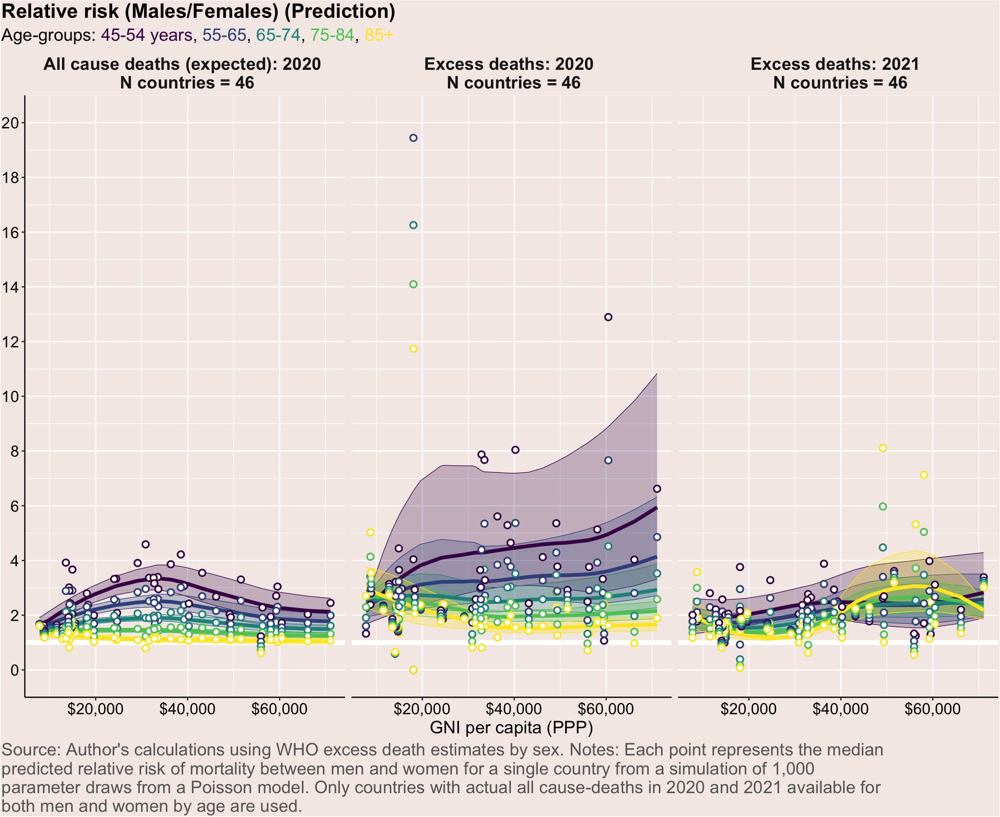
Annex
By country
The following set of figures display observed and predicted values of mortality rates, the sex-ratio of mortality rates (males/females) and the sex-gap of mortality rates (males - females) by age, for each country in the analysis dataset.
Argentina
- Total population: 44,985,105
- Total official COVID deaths in 2020 (Our World in Data): 48,271
- Total official COVID deaths in 2021 (Our World in Data): 69,905
- Total excess deaths in 2020 (WHO): 35,840.96
- Total excess deaths in 2021 (WHO):
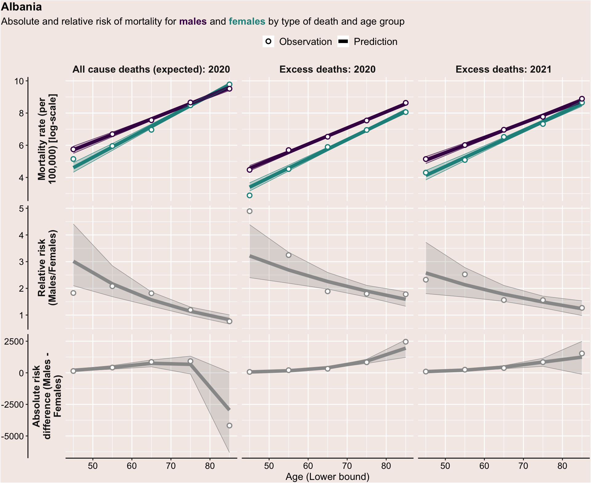
Austria
- Total population: 8,888,592
- Total official COVID deaths in 2020 (Our World in Data): 7,379
- Total official COVID deaths in 2021 (Our World in Data): 9,319
- Total excess deaths in 2020 (WHO): 8,087.427
- Total excess deaths in 2021 (WHO): 7,886.081
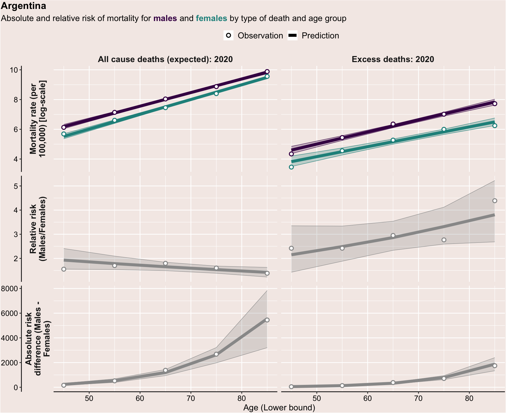
Azerbaijan
- Total population: 10,282,158
- Total official COVID deaths in 2020 (Our World in Data): 2,575
- Total official COVID deaths in 2021 (Our World in Data): 5,771
- Total excess deaths in 2020 (WHO): 12,039.15
- Total excess deaths in 2021 (WHO): 21,581.59
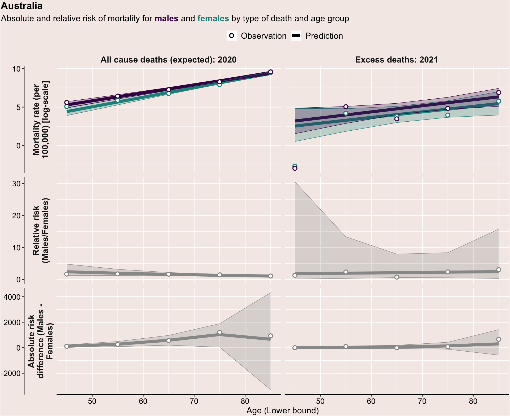
Belgium
- Total population: 11,533,459
- Total official COVID deaths in 2020 (Our World in Data): 19,674
- Total official COVID deaths in 2021 (Our World in Data): 8,682
- Total excess deaths in 2020 (WHO): 16,540.23
- Total excess deaths in 2021 (WHO): 3,794.365
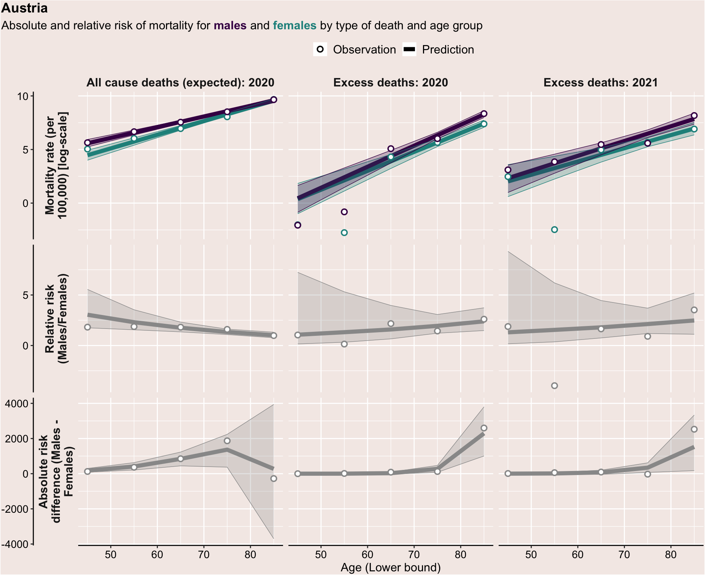
Bulgaria
- Total population: 6,967,018
- Total official COVID deaths in 2020 (Our World in Data): 7,515
- Total official COVID deaths in 2021 (Our World in Data): 23,375
- Total excess deaths in 2020 (WHO): 17,804.05
- Total excess deaths in 2021 (WHO): 42,715.42
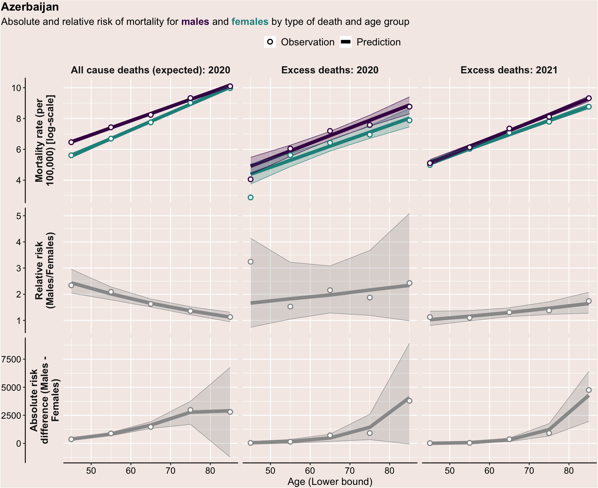
Bosnia and Herzegovina
- Total population: 3,314,350
- Total official COVID deaths in 2020 (Our World in Data): 4,050
- Total official COVID deaths in 2021 (Our World in Data): 9,378
- Total excess deaths in 2020 (WHO): 6,792.844
- Total excess deaths in 2021 (WHO):

Bolivia (Plurinational State of)
- Total population: 11,934,333
- Total official COVID deaths in 2020 (Our World in Data): 9,135
- Total official COVID deaths in 2021 (Our World in Data): 10,515
- Total excess deaths in 2020 (WHO): 33,888.56
- Total excess deaths in 2021 (WHO): 47,020.77
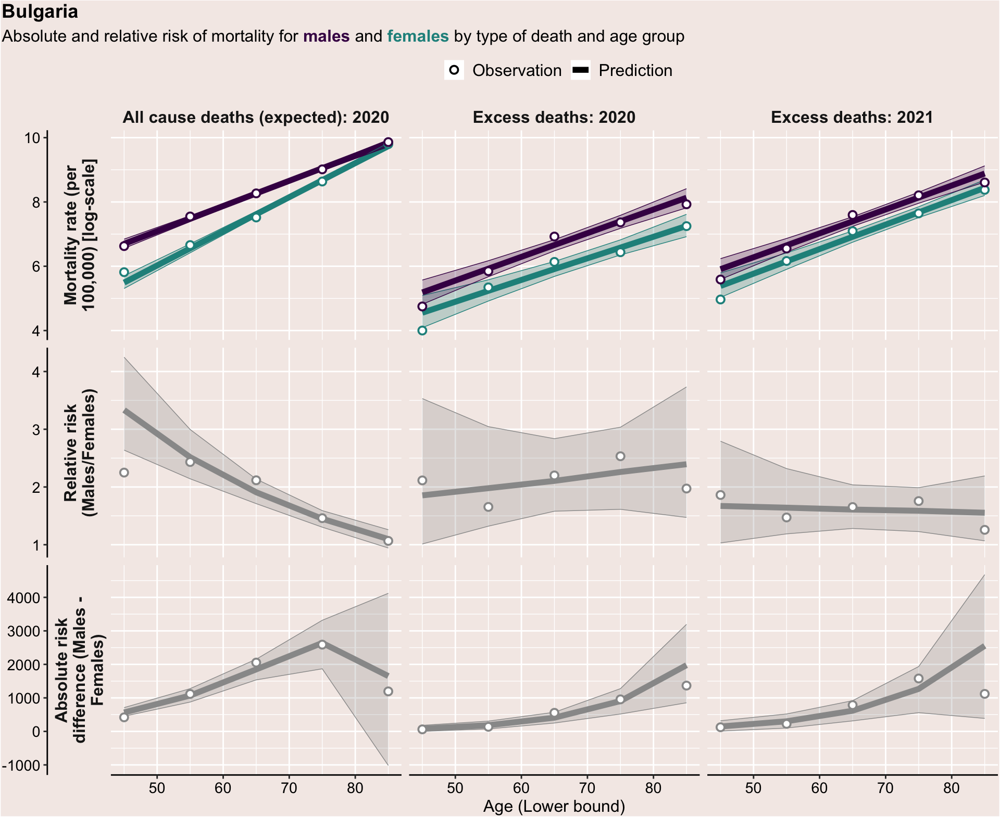
Brazil
- Total population: 213,114,918
- Total official COVID deaths in 2020 (Our World in Data): 192,681
- Total official COVID deaths in 2021 (Our World in Data): 426,136
- Total excess deaths in 2020 (WHO): 189,945.8
- Total excess deaths in 2021 (WHO): 467,480.1
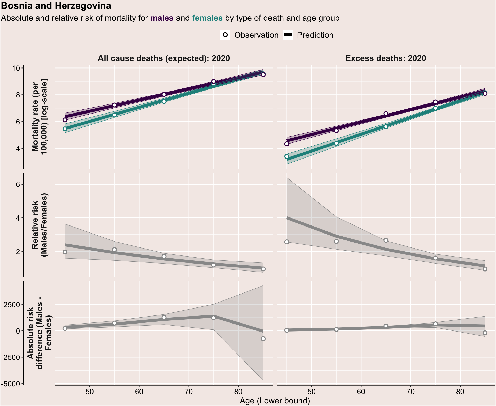
Canada
- Total population: 37,818,806
- Total official COVID deaths in 2020 (Our World in Data): 15,274
- Total official COVID deaths in 2021 (Our World in Data): 14,684
- Total excess deaths in 2020 (WHO): 14,551.54
- Total excess deaths in 2021 (WHO): 11,949.19
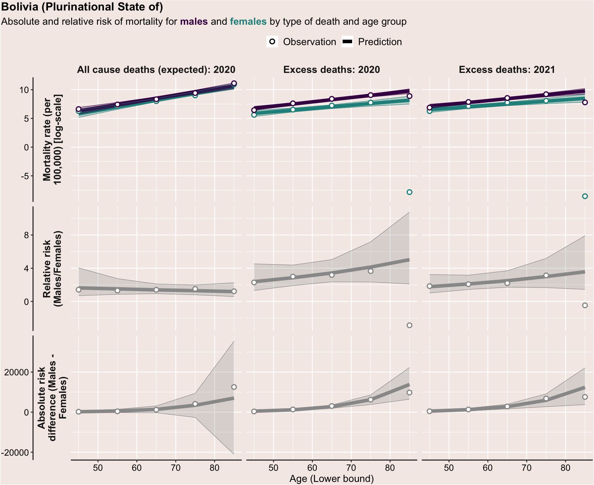
Switzerland
- Total population: 8,619,390
- Total official COVID deaths in 2020 (Our World in Data): 7,528
- Total official COVID deaths in 2021 (Our World in Data): 4,393
- Total excess deaths in 2020 (WHO): 8,808.004
- Total excess deaths in 2021 (WHO): 3,683.951
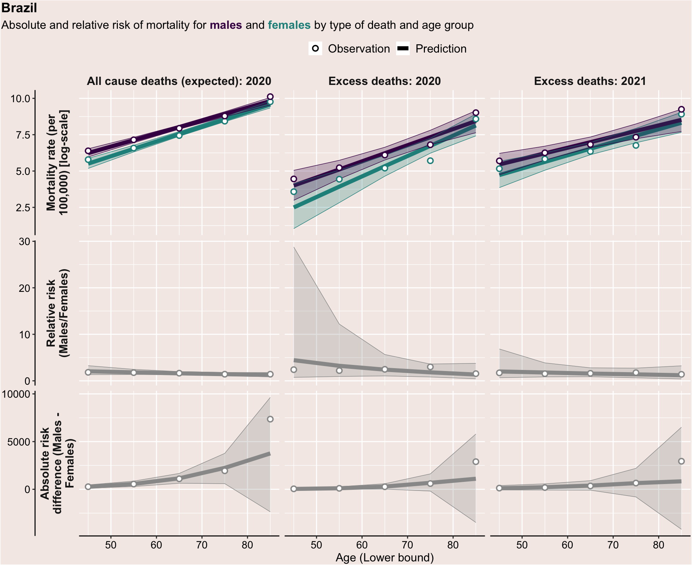
Chile
- Total population: 19,276,612
- Total official COVID deaths in 2020 (Our World in Data): 16,499
- Total official COVID deaths in 2021 (Our World in Data): 22,597
- Total excess deaths in 2020 (WHO): 14,771.02
- Total excess deaths in 2021 (WHO): 23,894.96
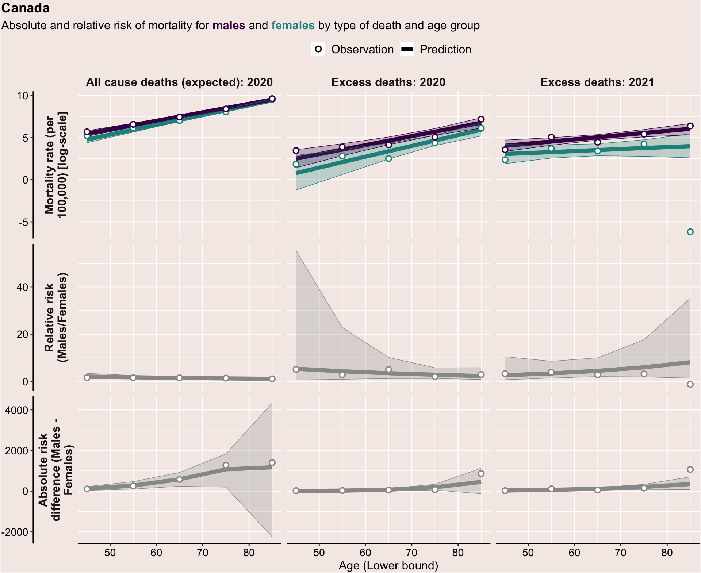
Colombia
- Total population: 50,911,158
- Total official COVID deaths in 2020 (Our World in Data): 42,620
- Total official COVID deaths in 2021 (Our World in Data): 87,246
- Total excess deaths in 2020 (WHO): 53,886.16
- Total excess deaths in 2021 (WHO): 108,332.4
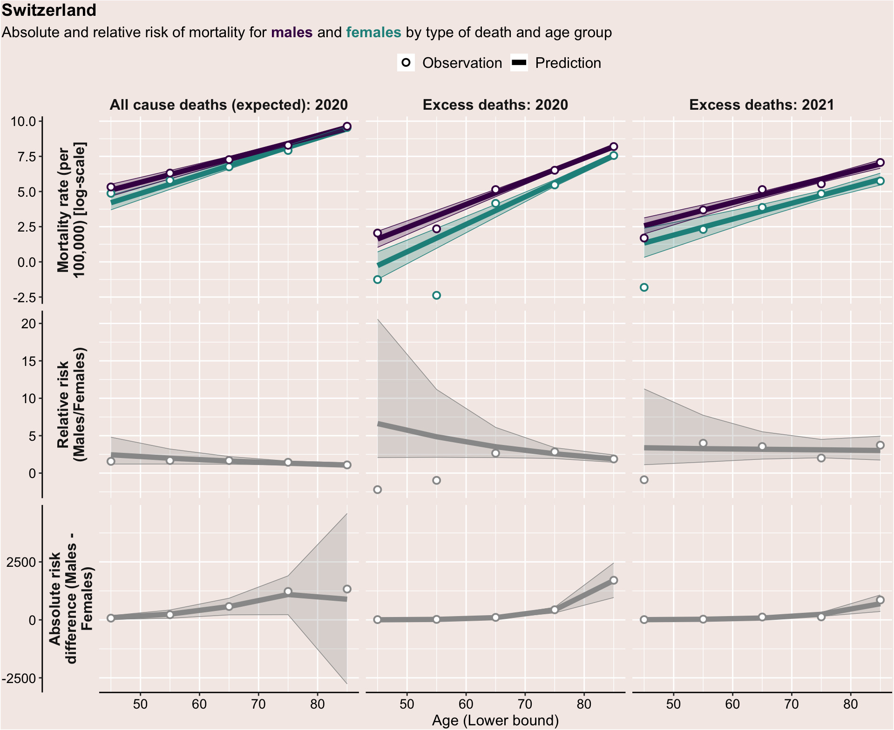
Costa Rica
- Total population: 5,119,855
- Total official COVID deaths in 2020 (Our World in Data): 2,156
- Total official COVID deaths in 2021 (Our World in Data): 5,198
- Total excess deaths in 2020 (WHO): 738.0506
- Total excess deaths in 2021 (WHO): 4,704.336
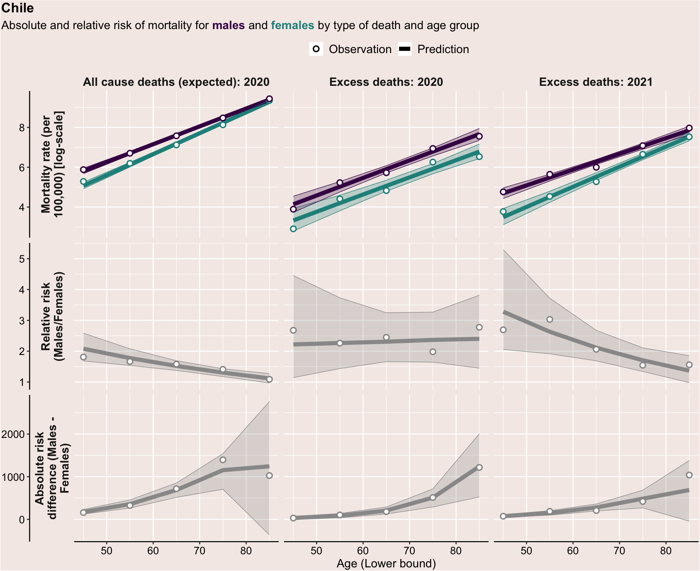
Czechia
- Total population: 10,514,740
- Total official COVID deaths in 2020 (Our World in Data): 11,888
- Total official COVID deaths in 2021 (Our World in Data): 24,444
- Total excess deaths in 2020 (WHO): 16,599.66
- Total excess deaths in 2021 (WHO): 26,648.28
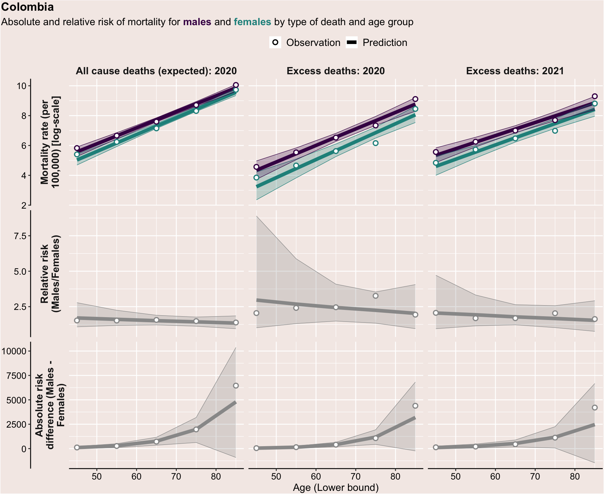
Germany
- Total population: 83,116,786
- Total official COVID deaths in 2020 (Our World in Data): 50,447
- Total official COVID deaths in 2021 (Our World in Data): 68,023
- Total excess deaths in 2020 (WHO): 34,514.19
- Total excess deaths in 2021 (WHO): 66,990.79
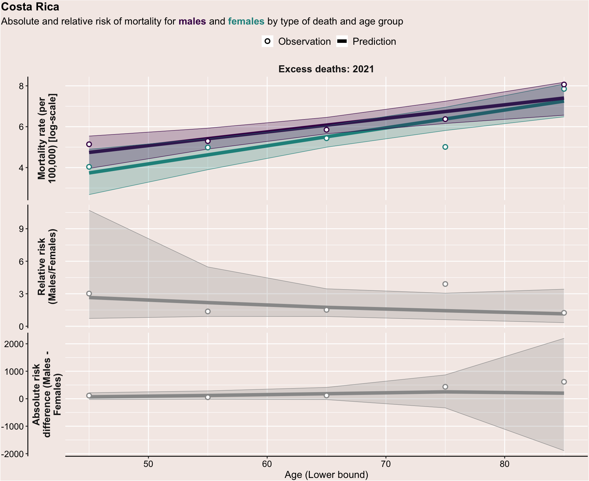
Dominican Republic
- Total population: 10,994,170
- Total official COVID deaths in 2020 (Our World in Data): 2,409
- Total official COVID deaths in 2021 (Our World in Data): 1,837
- Total excess deaths in 2020 (WHO): 2,333.078
- Total excess deaths in 2021 (WHO): 6,689.009
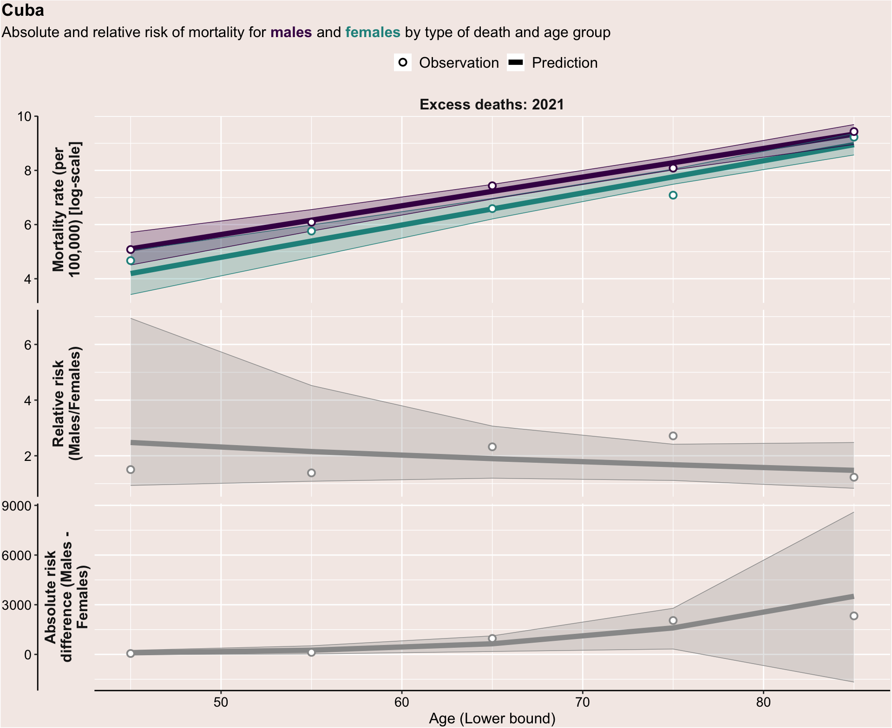
Ecuador
- Total population: 17,580,085
- Total official COVID deaths in 2020 (Our World in Data): 14,023
- Total official COVID deaths in 2021 (Our World in Data): 19,646
- Total excess deaths in 2020 (WHO): 46,706.66
- Total excess deaths in 2021 (WHO): 32,874.78
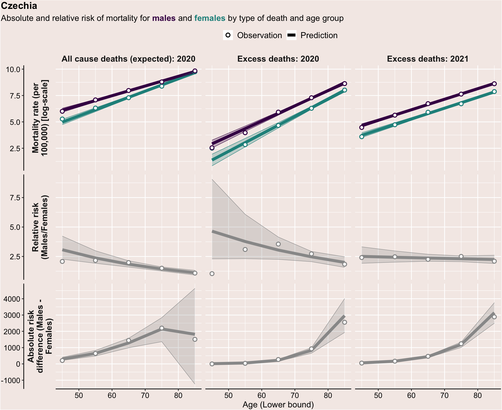
Egypt
- Total population: 107,450,137
- Total official COVID deaths in 2020 (Our World in Data): 7,520
- Total official COVID deaths in 2021 (Our World in Data): 14,175
- Total excess deaths in 2020 (WHO): 107,524
- Total excess deaths in 2021 (WHO):
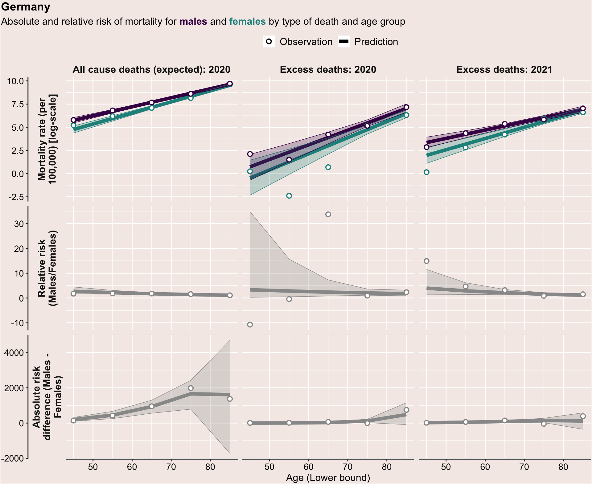
Spain
- Total population: 47,233,572
- Total official COVID deaths in 2020 (Our World in Data): 54,459
- Total official COVID deaths in 2021 (Our World in Data): 37,229
- Total excess deaths in 2020 (WHO): 75,201.66
- Total excess deaths in 2021 (WHO): 32,336.08

France
- Total population: 64,291,311
- Total official COVID deaths in 2020 (Our World in Data): 64,004
- Total official COVID deaths in 2021 (Our World in Data): 56,958
- Total excess deaths in 2020 (WHO): 50,200.12
- Total excess deaths in 2021 (WHO): 37,445.36

The United Kingdom
- Total population: 66,921,778
- Total official COVID deaths in 2020 (Our World in Data): 93,317
- Total official COVID deaths in 2021 (Our World in Data): 83,496
- Total excess deaths in 2020 (WHO): 81,734.67
- Total excess deaths in 2021 (WHO): 65,350.31
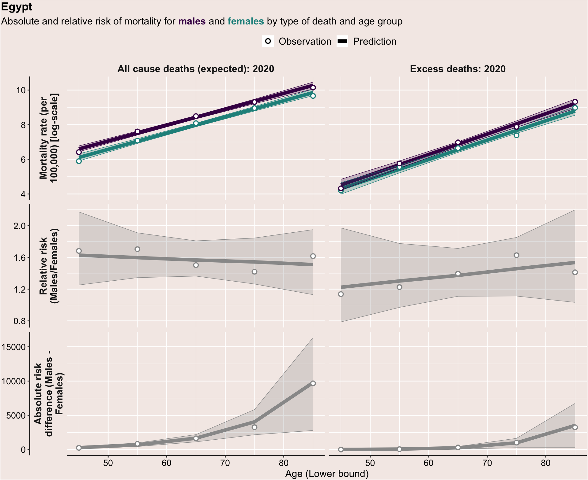
Georgia
- Total population: 3,762,236
- Total official COVID deaths in 2020 (Our World in Data): 2,505
- Total official COVID deaths in 2021 (Our World in Data): 11,295
- Total excess deaths in 2020 (WHO): 5,738.193
- Total excess deaths in 2021 (WHO): 17,255.76

Greece
- Total population: 10,484,757
- Total official COVID deaths in 2020 (Our World in Data): 4,788
- Total official COVID deaths in 2021 (Our World in Data): 15,920
- Total excess deaths in 2020 (WHO): 7,277.952
- Total excess deaths in 2021 (WHO): 19,485.75
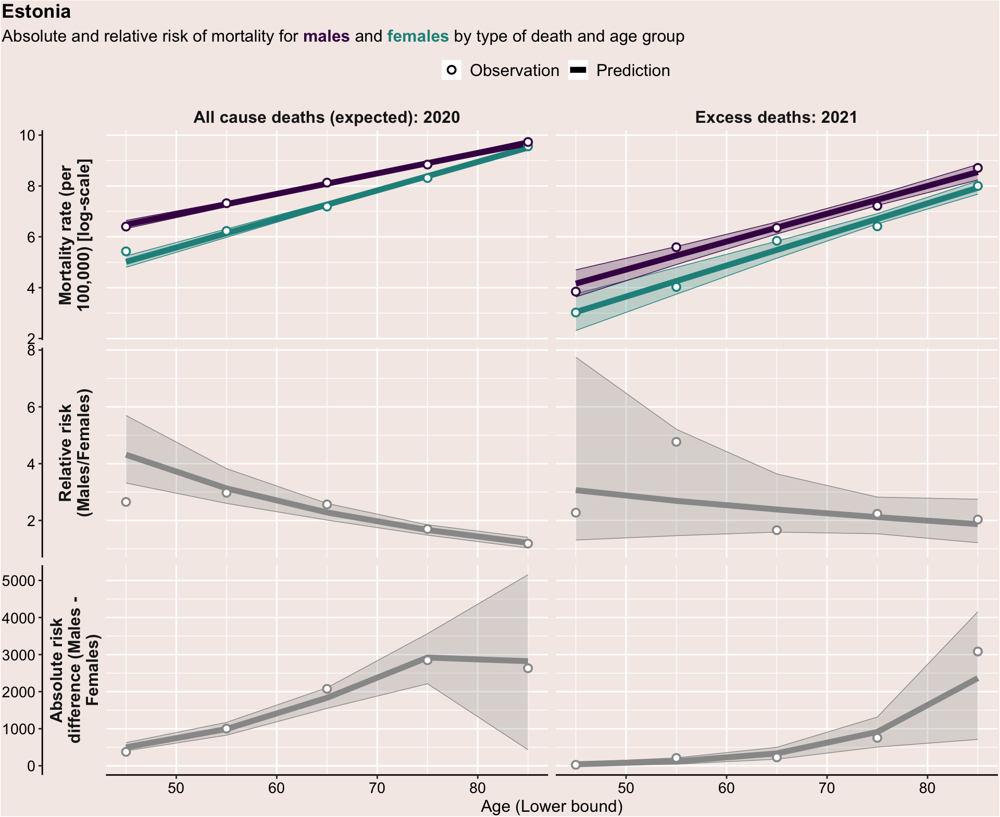
Guatemala
- Total population: 17,355,773
- Total official COVID deaths in 2020 (Our World in Data): 4,803
- Total official COVID deaths in 2021 (Our World in Data): 11,299
- Total excess deaths in 2020 (WHO): 12,580.13
- Total excess deaths in 2021 (WHO): 36,476.57
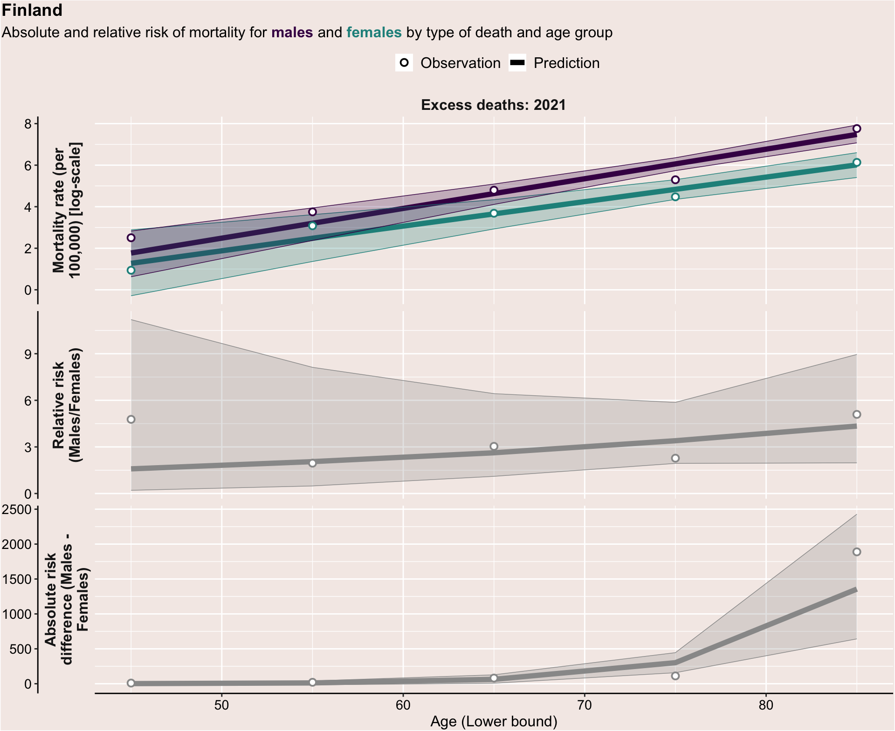
Croatia
- Total population: 4,089,053
- Total official COVID deaths in 2020 (Our World in Data): 3,860
- Total official COVID deaths in 2021 (Our World in Data): 8,633
- Total excess deaths in 2020 (WHO): 5,870.759
- Total excess deaths in 2021 (WHO): 12,268.29
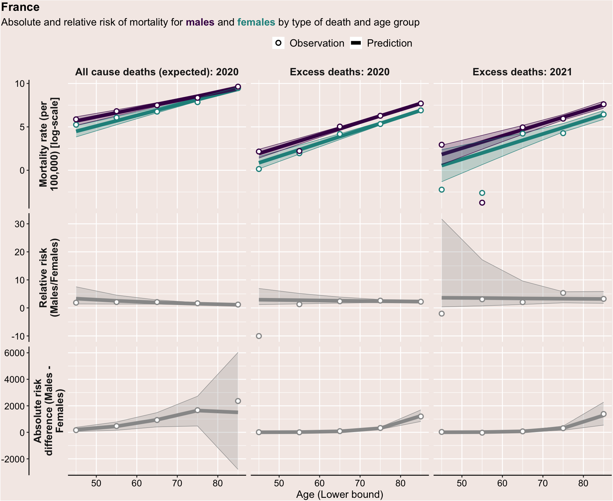
Hungary
- Total population: 9,733,129
- Total official COVID deaths in 2020 (Our World in Data): 9,537
- Total official COVID deaths in 2021 (Our World in Data): 29,649
- Total excess deaths in 2020 (WHO): 12,046.75
- Total excess deaths in 2021 (WHO): 26,972.14

Ireland
- Total population: 4,939,931
- Total official COVID deaths in 2020 (Our World in Data): 2,265
- Total official COVID deaths in 2021 (Our World in Data): 3,826
- Total excess deaths in 2020 (WHO): 1,601.448
- Total excess deaths in 2021 (WHO):
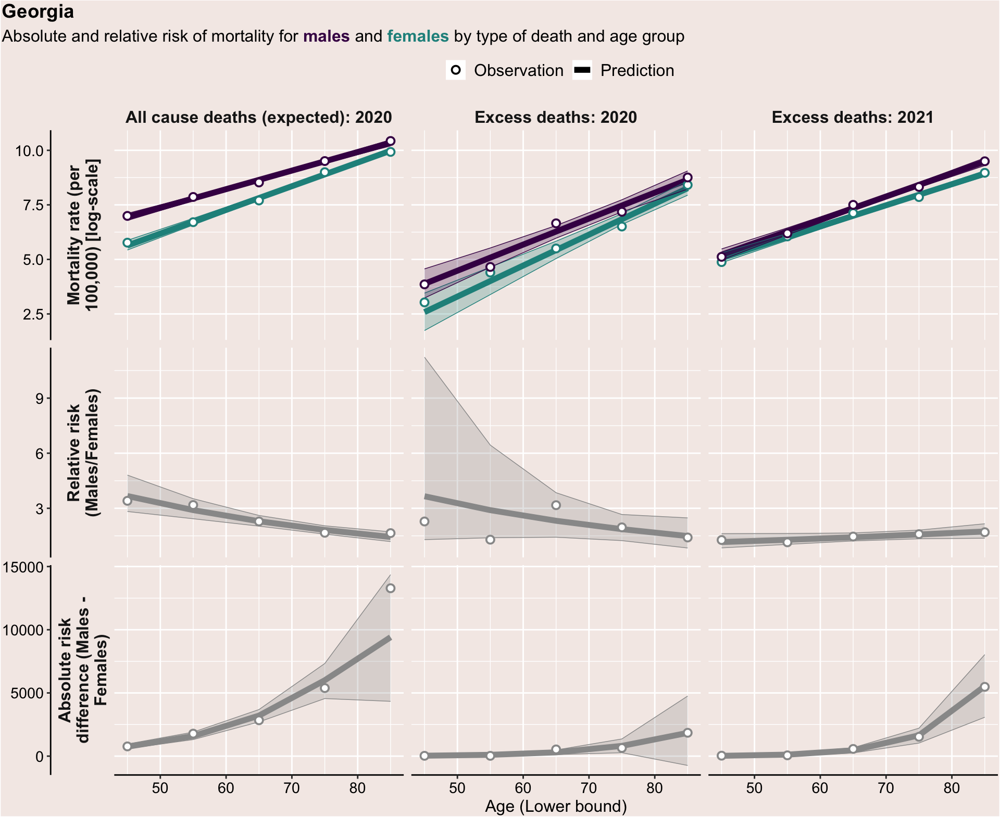
Iran (Islamic Republic of)
- Total population: 87,266,417
- Total official COVID deaths in 2020 (Our World in Data): 54,946
- Total official COVID deaths in 2021 (Our World in Data): 76,581
- Total excess deaths in 2020 (WHO): 136,293.9
- Total excess deaths in 2021 (WHO): 159,238.4

Iraq
- Total population: 42,553,401
- Total official COVID deaths in 2020 (Our World in Data): 12,800
- Total official COVID deaths in 2021 (Our World in Data): 11,351
- Total excess deaths in 2020 (WHO): 28,125.58
- Total excess deaths in 2021 (WHO):
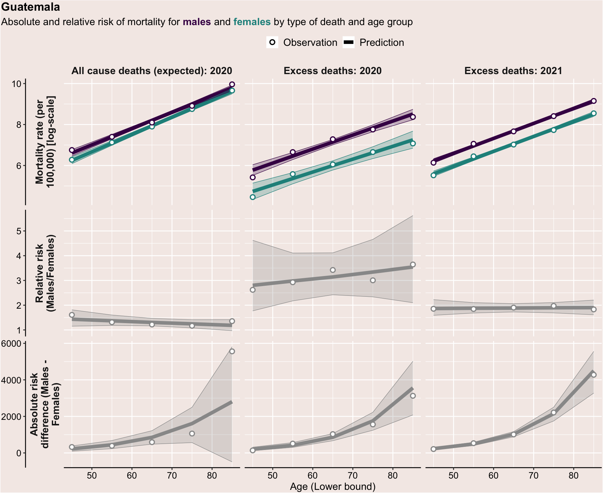
Israel
- Total population: 8,746,610
- Total official COVID deaths in 2020 (Our World in Data): 3,336
- Total official COVID deaths in 2021 (Our World in Data): 4,923
- Total excess deaths in 2020 (WHO): 3,177.944
- Total excess deaths in 2021 (WHO): 4,795.487
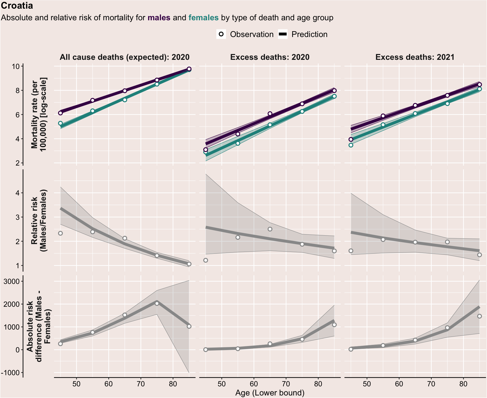
Italy
- Total population: 59,314,503
- Total official COVID deaths in 2020 (Our World in Data): 73,604
- Total official COVID deaths in 2021 (Our World in Data): 63,643
- Total excess deaths in 2020 (WHO): 109,157.4
- Total excess deaths in 2021 (WHO): 75,106.86

Japan
- Total population: 124,706,807
- Total official COVID deaths in 2020 (Our World in Data): 3,414
- Total official COVID deaths in 2021 (Our World in Data): 14,979
- Total excess deaths in 2020 (WHO): -21,921.16
- Total excess deaths in 2021 (WHO): 22,117.4
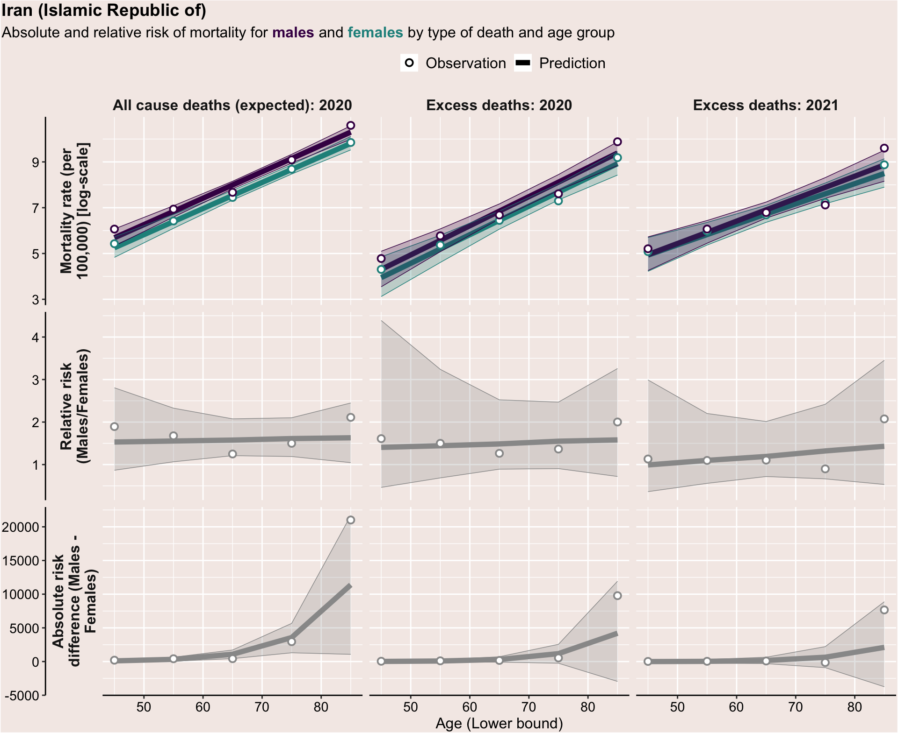
Kazakhstan
- Total population: 18,973,597
- Total official COVID deaths in 2020 (Our World in Data): 2,749
- Total official COVID deaths in 2021 (Our World in Data): 15,478
- Total excess deaths in 2020 (WHO): 31,218.43
- Total excess deaths in 2021 (WHO): 52,050.25
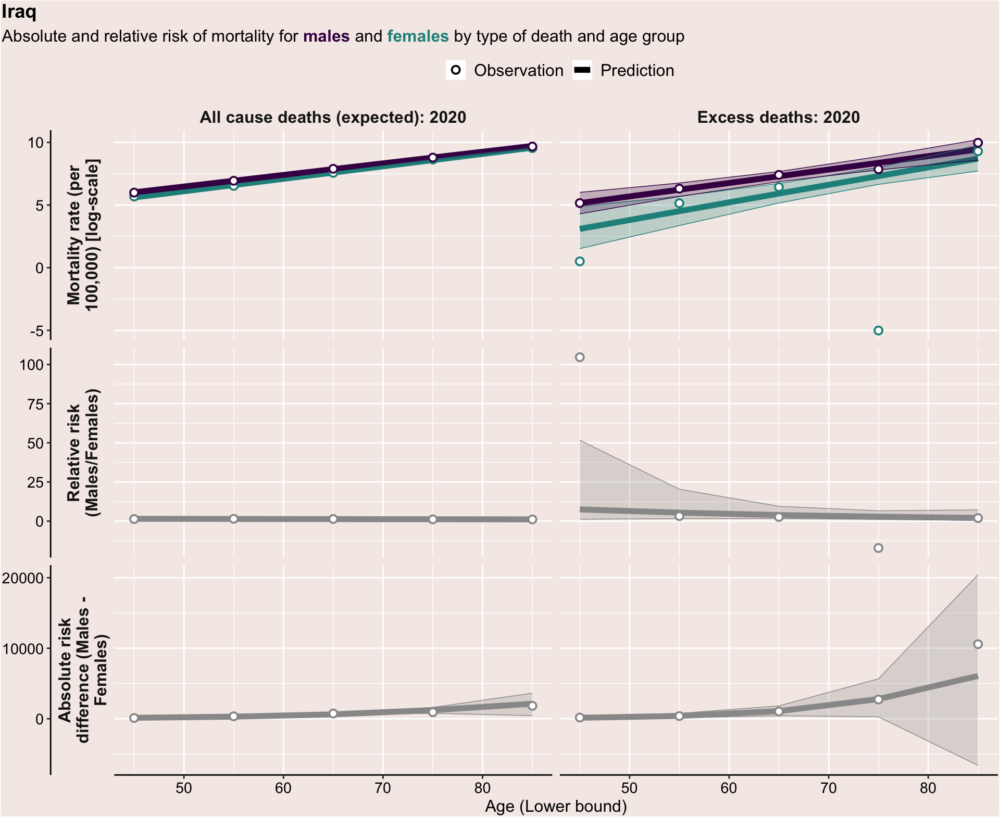
Republic of Moldova
- Total population: 3,082,703
- Total official COVID deaths in 2020 (Our World in Data): 3,110
- Total official COVID deaths in 2021 (Our World in Data): 7,159
- Total excess deaths in 2020 (WHO): 5,436.351
- Total excess deaths in 2021 (WHO): 10,905.46
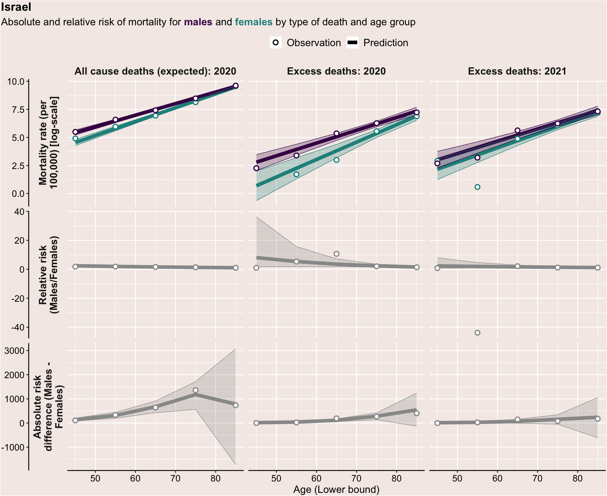
Mexico
- Total population: 125,917,904
- Total official COVID deaths in 2020 (Our World in Data): 147,623
- Total official COVID deaths in 2021 (Our World in Data): 156,199
- Total excess deaths in 2020 (WHO): 297,154
- Total excess deaths in 2021 (WHO): 315,216
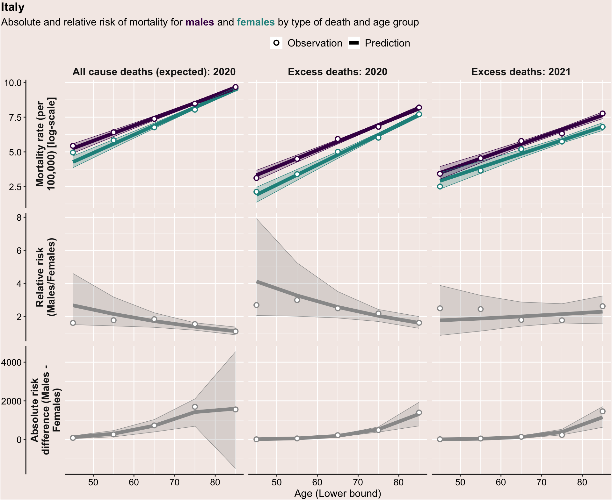
Netherlands
- Total population: 17,403,110
- Total official COVID deaths in 2020 (Our World in Data): 11,296
- Total official COVID deaths in 2021 (Our World in Data): 9,589
- Total excess deaths in 2020 (WHO): 14,530.01
- Total excess deaths in 2021 (WHO): 16,001.69
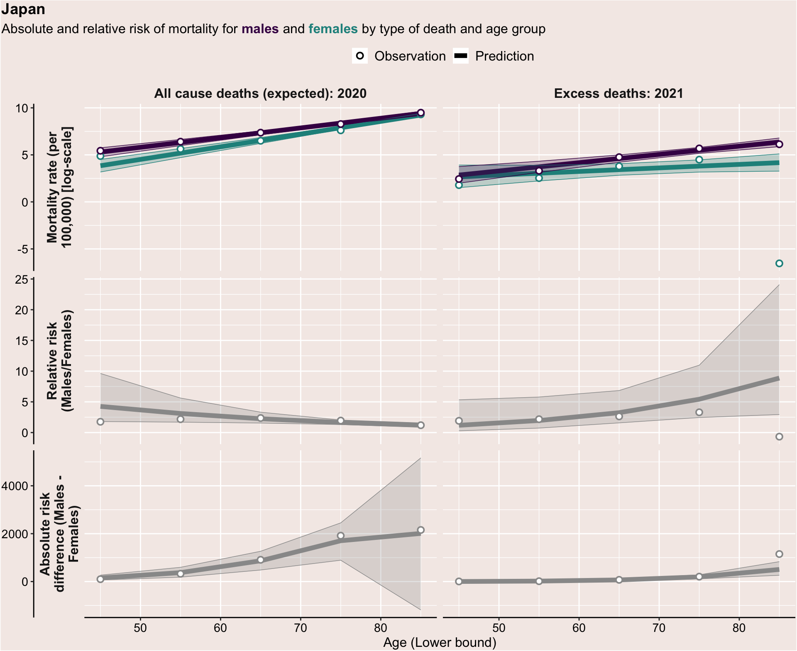
Panama
- Total population: 4,291,548
- Total official COVID deaths in 2020 (Our World in Data): 3,933
- Total official COVID deaths in 2021 (Our World in Data): 3,492
- Total excess deaths in 2020 (WHO): 2,861.276
- Total excess deaths in 2021 (WHO):
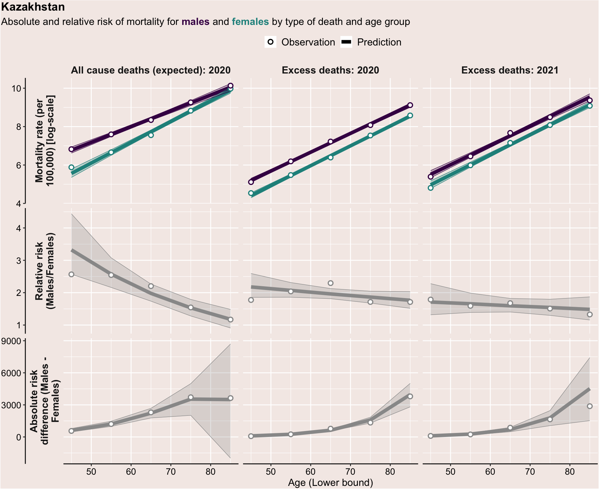
Peru
- Total population: 33,290,096
- Total official COVID deaths in 2020 (Our World in Data): 93,066
- Total official COVID deaths in 2021 (Our World in Data): 109,518
- Total excess deaths in 2020 (WHO): 100,106.6
- Total excess deaths in 2021 (WHO): 124,084.2
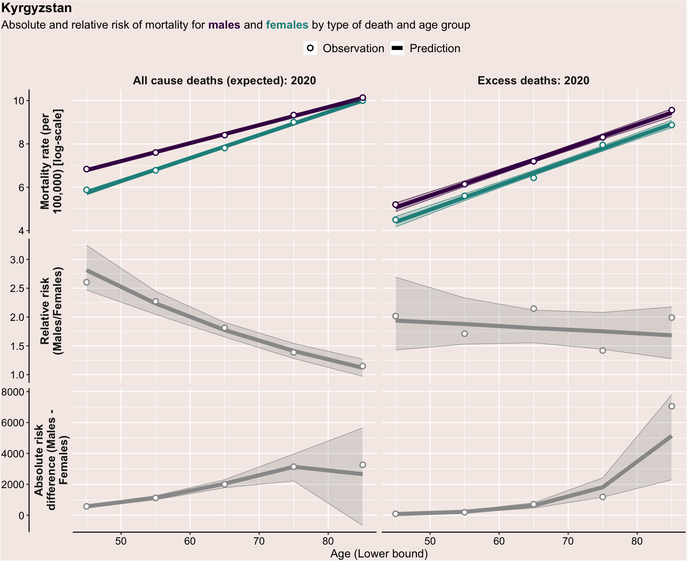
Poland
- Total population: 38,358,520
- Total official COVID deaths in 2020 (Our World in Data): 28,642
- Total official COVID deaths in 2021 (Our World in Data): 68,416
- Total excess deaths in 2020 (WHO): 63,032.16
- Total excess deaths in 2021 (WHO): 100,112.2
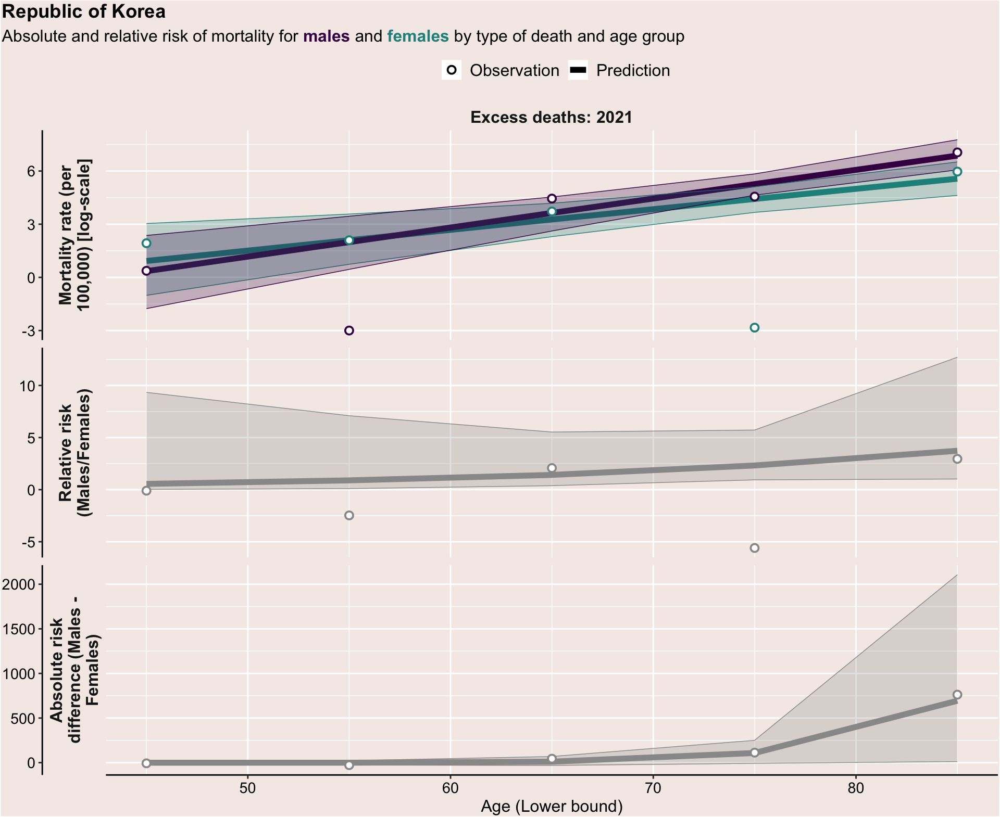
Portugal
- Total population: 10,274,559
- Total official COVID deaths in 2020 (Our World in Data): 6,842
- Total official COVID deaths in 2021 (Our World in Data): 12,095
- Total excess deaths in 2020 (WHO): 11,245.03
- Total excess deaths in 2021 (WHO): 12,245.21
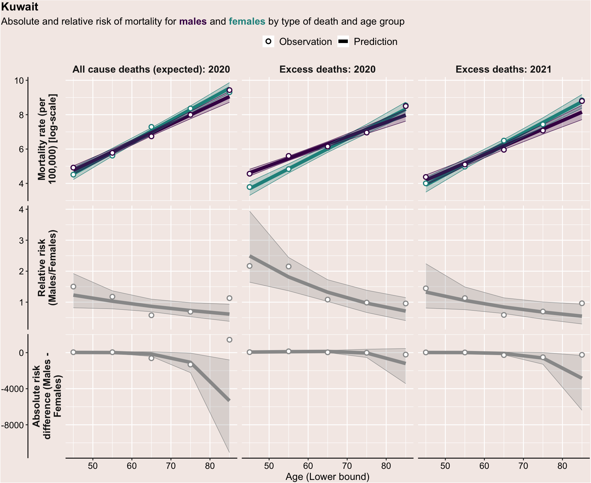
Paraguay
- Total population: 6,615,894
- Total official COVID deaths in 2020 (Our World in Data): 2,220
- Total official COVID deaths in 2021 (Our World in Data): 14,404
- Total excess deaths in 2020 (WHO): 1,423.428
- Total excess deaths in 2021 (WHO): 18,371.62
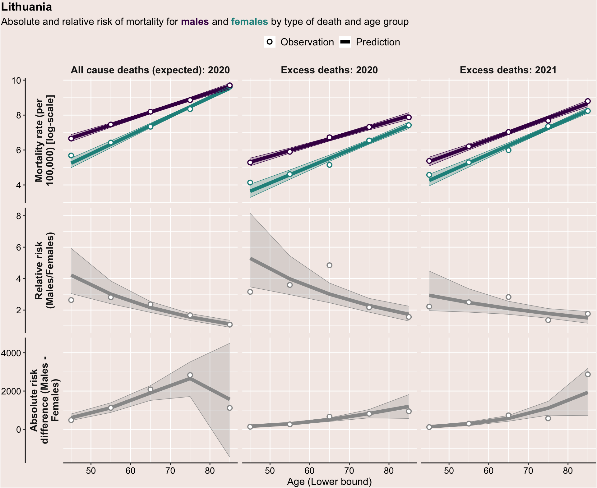
Romania
- Total population: 19,411,764
- Total official COVID deaths in 2020 (Our World in Data): 15,596
- Total official COVID deaths in 2021 (Our World in Data): 43,118
- Total excess deaths in 2020 (WHO): 37,164.14
- Total excess deaths in 2021 (WHO): 76,235.53
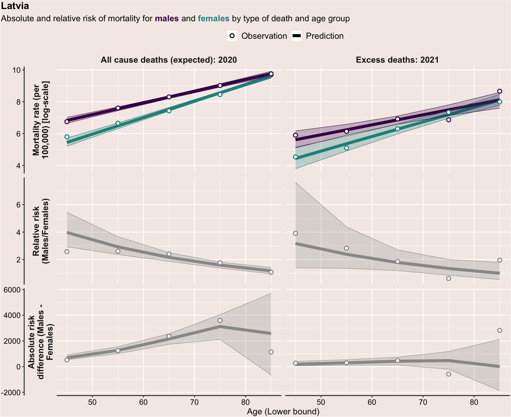
Russian Federation
- Total population: 145,420,443
- Total official COVID deaths in 2020 (Our World in Data): 57,019
- Total official COVID deaths in 2021 (Our World in Data): 251,841
- Total excess deaths in 2020 (WHO): 380,136.8
- Total excess deaths in 2021 (WHO): 713,027.8
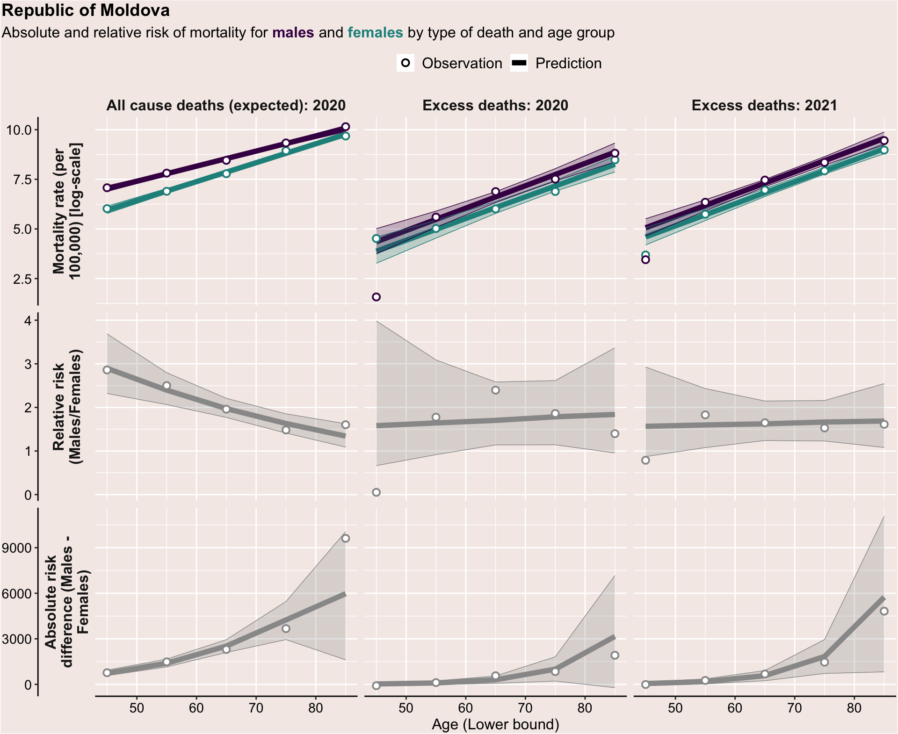
Serbia
- Total population: 7,347,278
- Total official COVID deaths in 2020 (Our World in Data): 3,163
- Total official COVID deaths in 2021 (Our World in Data): 9,525
- Total excess deaths in 2020 (WHO): 16,724.08
- Total excess deaths in 2021 (WHO): 36,442.32

Slovakia
- Total population: 5,449,592
- Total official COVID deaths in 2020 (Our World in Data): 2,138
- Total official COVID deaths in 2021 (Our World in Data): 14,497
- Total excess deaths in 2020 (WHO): 5,849.537
- Total excess deaths in 2021 (WHO): 20,291.01
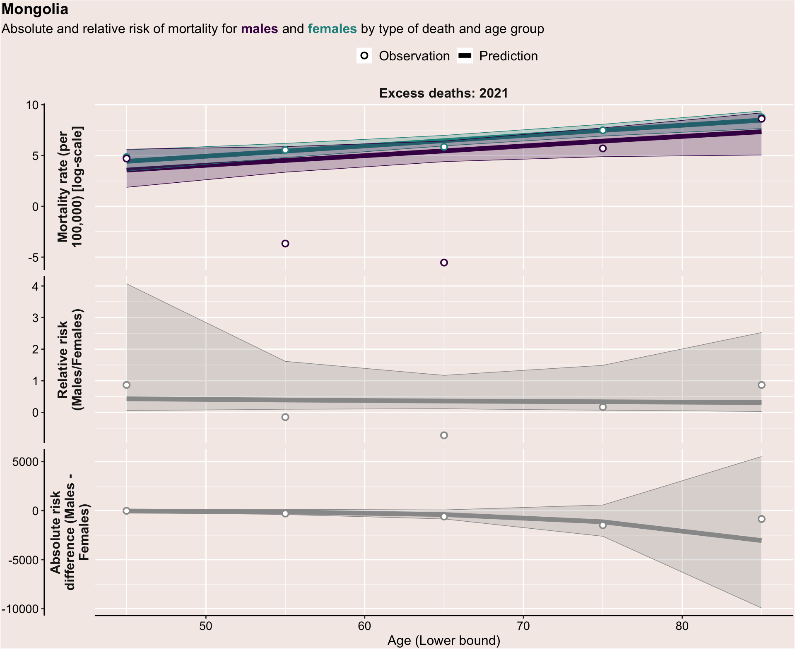
Slovenia
- Total population: 2,113,213
- Total official COVID deaths in 2020 (Our World in Data): 2,981
- Total official COVID deaths in 2021 (Our World in Data): 3,139
- Total excess deaths in 2020 (WHO): 1,317.898
- Total excess deaths in 2021 (WHO): 241.1147
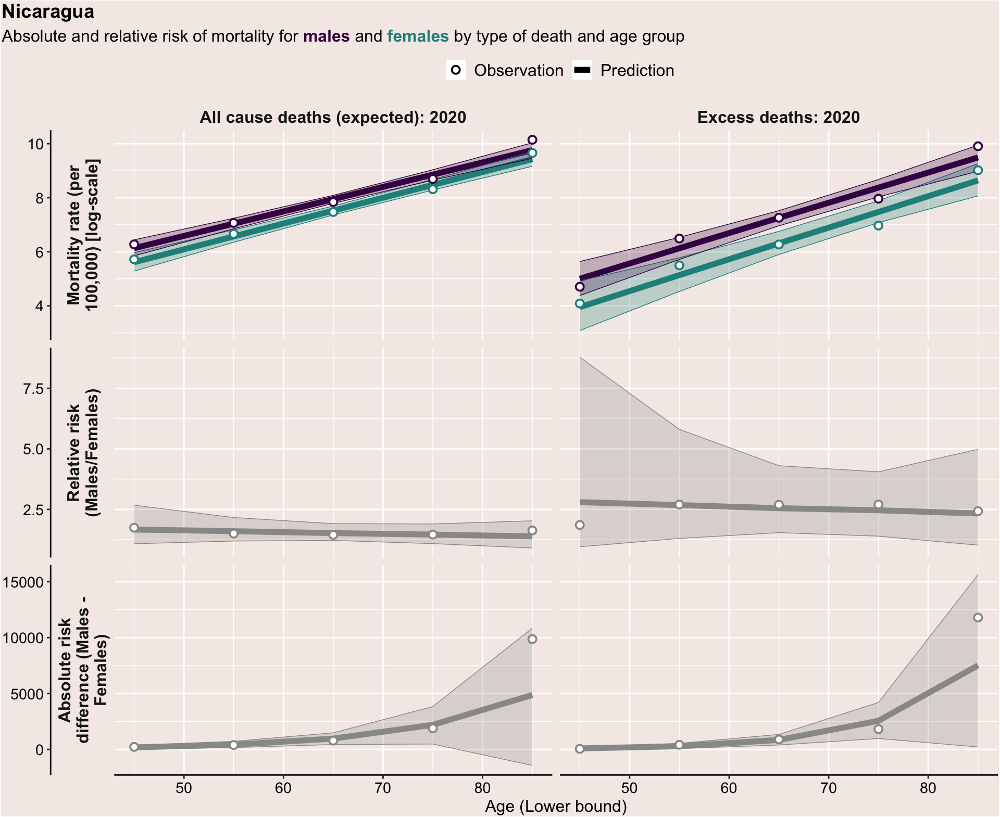
Sweden
- Total population: 10,347,118
- Total official COVID deaths in 2020 (Our World in Data): 9,706
- Total official COVID deaths in 2021 (Our World in Data): 5,639
- Total excess deaths in 2020 (WHO): 8,932.776
- Total excess deaths in 2021 (WHO): 3,273.921

Tunisia
- Total population: 12,156,148
- Total official COVID deaths in 2020 (Our World in Data): 4,620
- Total official COVID deaths in 2021 (Our World in Data): 20,944
- Total excess deaths in 2020 (WHO): 4,322.457
- Total excess deaths in 2021 (WHO):
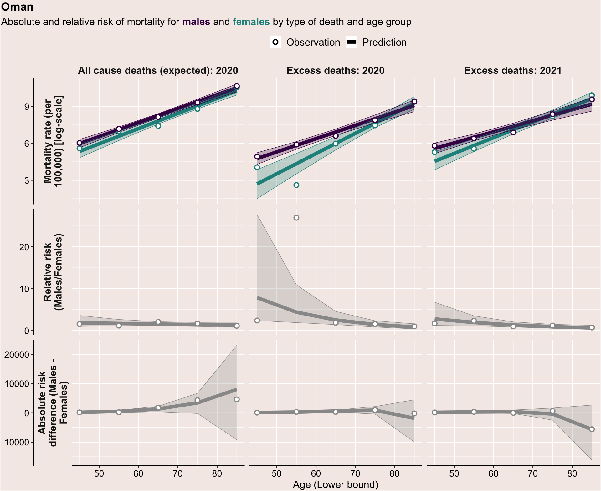
Ukraine
- Total population: 43,843,015
- Total official COVID deaths in 2020 (Our World in Data): 18,533
- Total official COVID deaths in 2021 (Our World in Data): 77,366
- Total excess deaths in 2020 (WHO): 43,125.64
- Total excess deaths in 2021 (WHO): 144,710.5
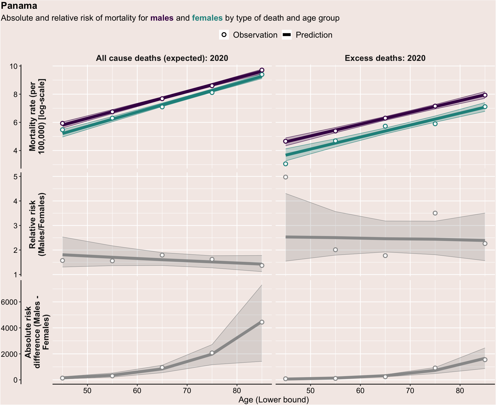
USA
- Total population: 335,410,796
- Total official COVID deaths in 2020 (Our World in Data): 352,004
- Total official COVID deaths in 2021 (Our World in Data): 467,051
- Total excess deaths in 2020 (WHO): 467,312.8
- Total excess deaths in 2021 (WHO): 501,112.5
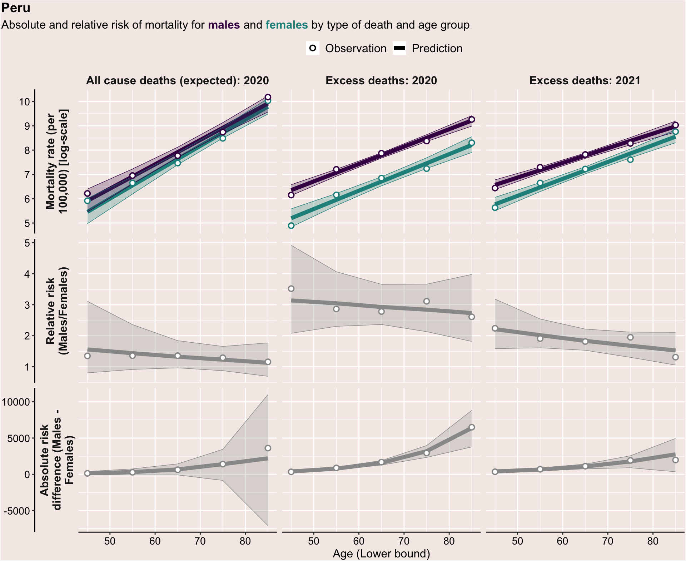
South Africa
- Total population: 58,778,516
- Total official COVID deaths in 2020 (Our World in Data): 28,033
- Total official COVID deaths in 2021 (Our World in Data): 63,028
- Total excess deaths in 2020 (WHO): 56,967.63
- Total excess deaths in 2021 (WHO): 189,834.3
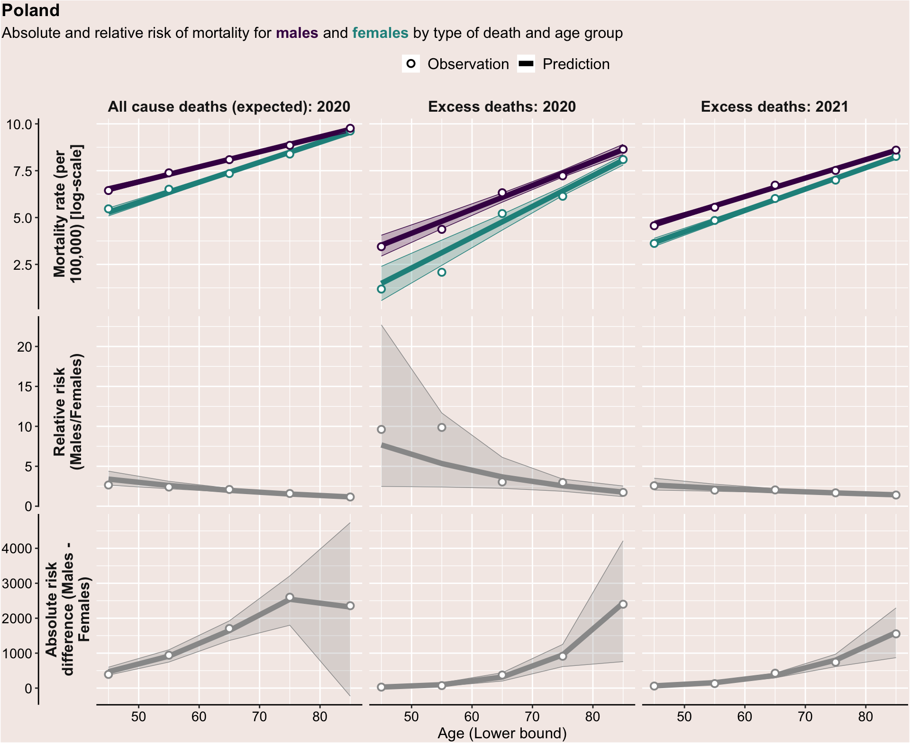